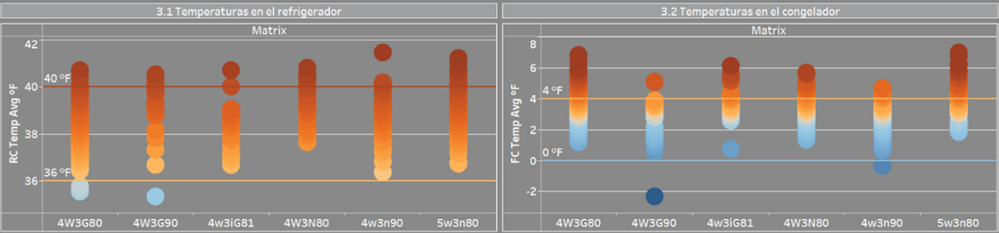
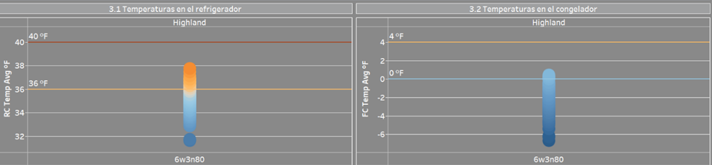
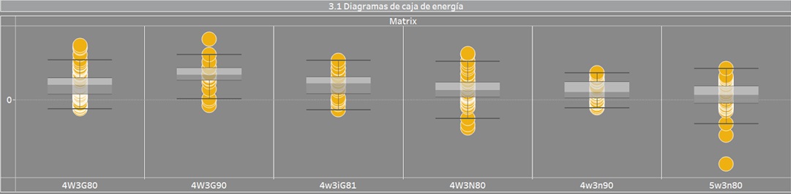
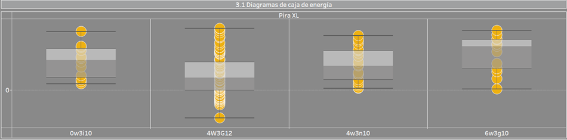
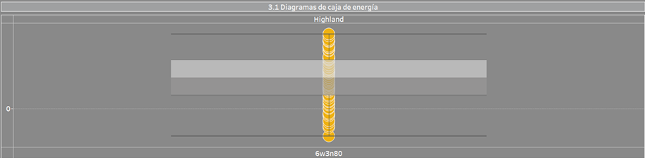
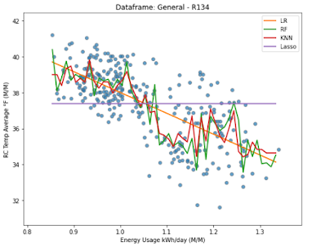
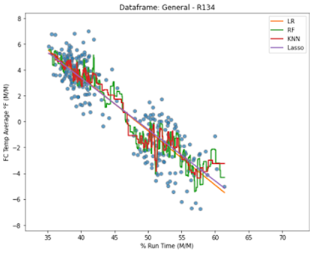
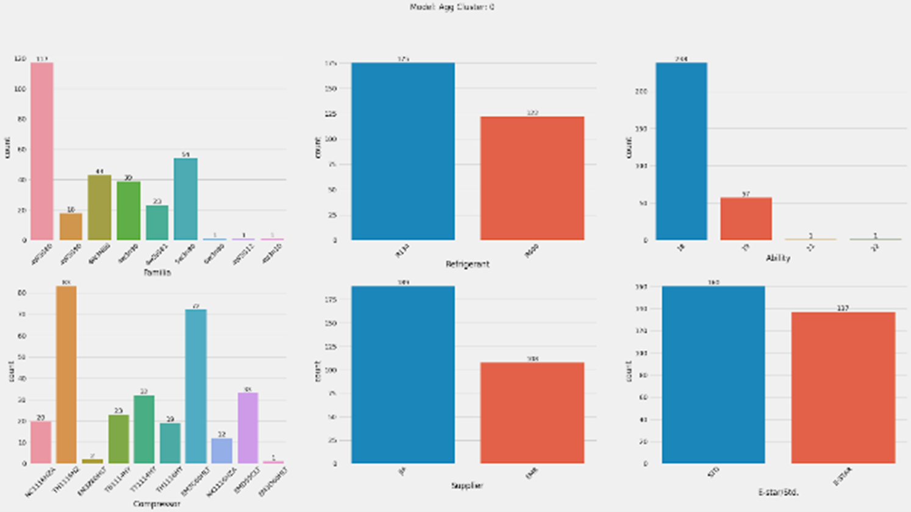
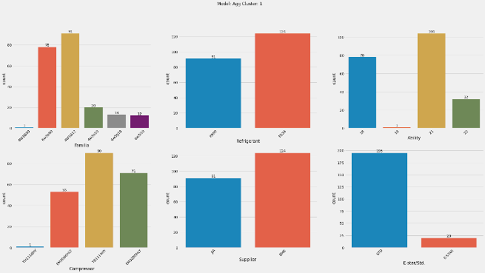
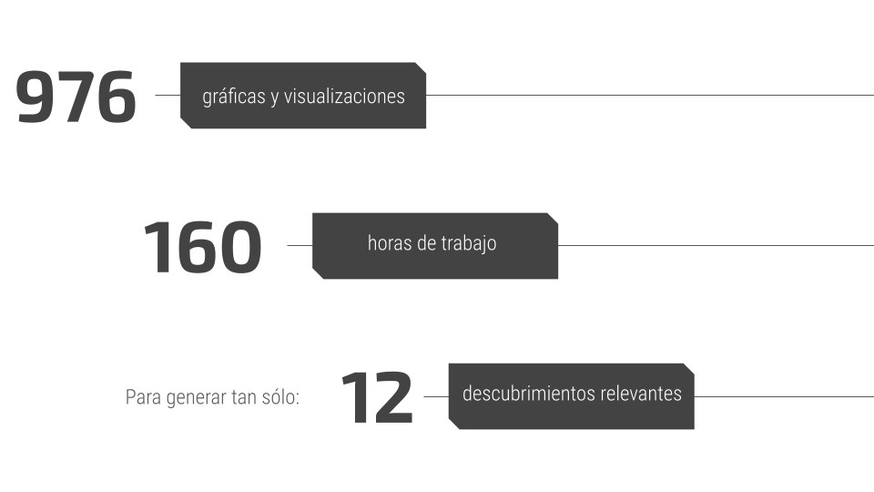

Análisis del comportamiento en refrigeradores
Whirlpool Corporation
- Fundada en 1911 por Lou Upton.
- Una de las compañías líderes en la manufactura de electrodomésticos, teniendo presencia a nivel global.
Objetivo
“Being the best global kitchen and laundry company, in constant pursuit of improving life at home.”¿Tienen los refrigeradores la temperatura adecuada?
REFRIGERADOR
CONGELADOR
MATRIX
PIRA XL

HIGHLAND

Las unidades de la plataforma de Matrix presentan las temperaturas más elevadas, excediendo los límites máximos tolerables.
Por el contrario, las unidades de Highland y Pira XL llegan a presentar unidades con temperaturas más frías.
Sólo 1 familia, 4W3G80, se acerca al comportamiento deseado para este tipo de productos.
Adicionalmente, existen otras variables que pueden influir en este comportamiento: refrigerante, compresor, tipo de unidad.
¿Los refrigeradores consumen energía de manera eficiente?
Las familias que presentaron los ahorros de energía más elevados son la 4W3G80 y 4W3G90, ambas de las familias Matrix.
Por el contrario, las familias con los gastos de energía más elevados son la 4W3N80 de Matrix, y la 5w3n80 de Pira XL.
Finalmente, las unidades que utilizan el refrigerante R600 presentan, en general, un mayor ahorro de energía.
MATRIX
PIRA XL
HIGHLAND
¿Cómo es la relación entre la temperatura y el consumo?
Es importante señalar que la temperatura y el consumo de energía no son factores aislados, sino que cada uno tiene un impacto sobre el otro.
Como se muestra en el siguiente mapa de calor, las variables con mayor relación son la temperatura y el consumo de energía diario.
Correlation Heatmap



¿Qué significan los clusters?

Cluster A

Cluster B
No obstante, durante dicho planteamiento no se realizó mención alguna de otro de los mayores problemas que surge a la hora de analizar los datos: el tiempo. Para el análisis de la base de datos proporcionada fueron necesarias:

Lo anterior ha llevado a la generación de 4 tableros, cuyo fin es facilitar, agilizar e incrementar la exploración de los datos; y con ello, la toma de decisiones para mejorar los productos.